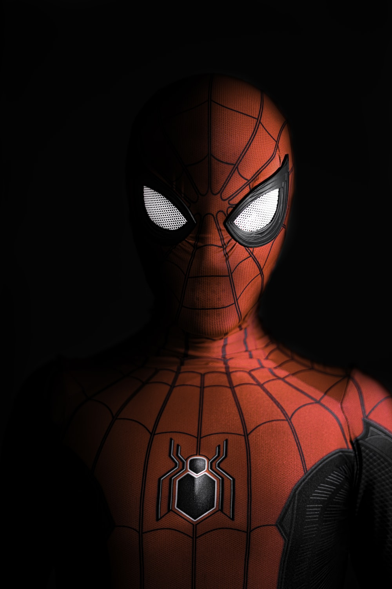

In this page you will know about our hero "SPIDER MAN"
You know what is the best part of the "SPIDER MAN"?-->The best part is
that
Anywone can be "SPIDER MAN"
"With great power comes great responsibility"

| SPIDER MAN |
You can click on "SPIDER MAN" for more infromation.
Spider-Man, comic-book character who was the original everyman superhero. In Spider-Man's first story, in Marvel Comics' Amazing Fantasy, no. 15 (1962), American teenager Peter Parker, a poor sickly orphan, is bitten by a radioactive spider. As a result of the bite, he gains superhuman strength, speed, and agility along with the ability to cling to walls. Writer Stan Lee and illustrator Steve Ditko created Spider-Man as a filler story for a canceled anthology series. At the time, a teenage lead hero was unheard of in comic books. However, young readers responded powerfully to Peter Parker, prompting an ongoing title and, ultimately, a media empire, including video games, several animated and one live-action television series, a live-action film franchise, and a Broadway musical.
Made By MOHIT YADAV